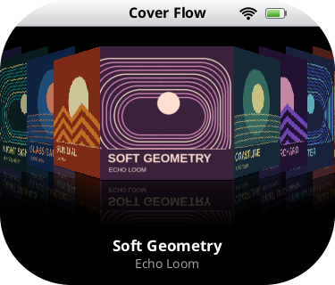
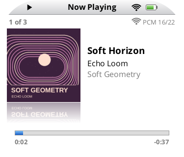
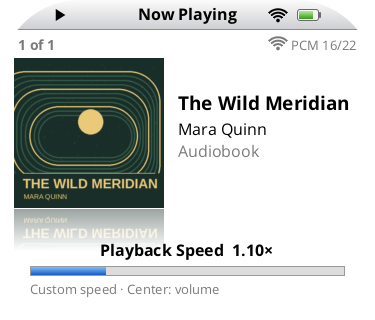
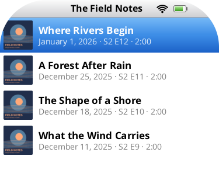
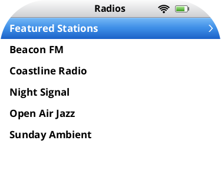
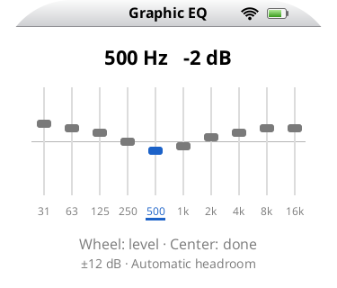

Keep a download
Download an album, playlist, book or episode before you leave Wi-Fi. Downloads stay on the card even as the rolling music cache fills.
Try an offline downloadQ2 Nova brings your media directly to the Shanling Q2 Buying through this link supports my work..
Includes streaming and offline support for Navidrome and Audiobookshelf, plus Tailscale private networking.
Rigorously optimized. Faster and longer battery life than stock.

Flip through sleeves with the wheel or browse by artist, album or search. Press Centre on a cover to see its tracks.
Browse covers in the demo
Turn the wheel for volume. Press Centre to scrub or rate the track. Hold Return to get back to browsing.
Try the playback controls
Browse Audiobookshelf by author, narrator or series. Set narration speed, skip chapters and sync your place across devices. Local M4B files work from the card.
Open a book in the demo
Open a show from your Audiobookshelf library. Download an episode to play it from the card when the server is out of reach.

Tune in to your saved Navidrome stations, or open Featured Stations for FIP, KEXP and SomaFM.
Tune the radio in the demo
Use wired or Bluetooth headphones. Choose a headphone-specific AutoEQ correction, adjust the separate ten-band graphic EQ and level tracks with ReplayGain.
Adjust EQ in the demoQ2 Nova includes an emulator and thorough quality checks so your coding agent can extend it without creating a mess.
Plan what goes on your microSD card, or reach your server from another Wi-Fi network.
Download an album, playlist, book or episode before you leave Wi-Fi. Downloads stay on the card even as the rolling music cache fills.
Try an offline downloadShuffle can start with music already on the card. Plays, hearts and ratings wait there and sync when Navidrome is reachable again.
Optional Tailscale connects the player to a private server over Wi-Fi when you’re away from your home network.
Connect an external DAC over USB and use the Q2 to browse your library and control playback.
Use track gain to even out the volume on shuffle, or album gain to preserve the loud and quiet passages across a record.
Hold Centre in Now Playing to set a timer for a book or podcast. Playback fades out when the timer ends.